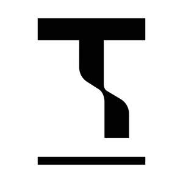

Trade Mark Journal No.2025/048 28 November 2025
UK00004294951 14 November 2025 (9,16,20,24,35,42)
Mark 1
Mark 2
Mark 3
Mark 4
Mark 5
Mark 6

- Class 9
- Temperature indicator labels, not for medical purposes; Thermosensitive temperatureindicator strips; Electronic tags; Electronic security tags; Electronic tags for goods; Radio-frequency identification (RFID) tags; Identification labels [encoded]; Identification labels[magnetic]; Label readers [decoders]; Identification labels [machine readable]; Self-adhesive labels [encoded]; Self-adhesive labels [magnetic]; Bar code labels,encoded; Labels with machine-readable codes; Labels with integrated RFID chips; Labelscarrying electronically recorded or encoded information; Labels carrying opticallyrecorded or encoded information; Labels carrying magnetically recorded or encoded information; Retail software; Computer software; Computer programs; Computer systems; Computer programmes; Computer software downloadable from global computer networks; Computer software packages; Downloadable computer programs; Downloadable computer software; Recorded computer programs; Recorded computer software; Computer application software; Application software; Downloadable software; Logistics software; Electronic temperature monitors, other than for medical use.
- Class 16
- Paper tags; Price tags; Paper identification tags; Cardboard labels; Paper labels; Shipping labels; Adhesive labels; Labels of paper; Adhesive printed labels; Printed paper labels; Hand labelling appliances; Adhesive labels of paper; Labels, not of textile.
- Class 20
- Identification tags, not of metal; Labels of plastic.
- Class 24
- Tags of textile for attachment to linen; Tags of textile for attachment to clothing; Woven labels; Textile labels; Cloth labels; Labels (textile); Labels [cloth]; Printed textile labels; Labelsof cloth; Adhesive labels (Textile -); Labels of textile; Self-adhesive cloth labels; Labels(Textile -) for identifying clothing; Labels (Textile -) for identifying linen; Labels (Textile -)for marking linen; Labels (Textile -) for marking clothing; Labels made of textile materials; Labels of textile for identifying clothing; Labels of textile for bar codes; Markers[labels] of cloth for textile fabrics.
- Class 35
- Retail services relating to food; Retail services relating to clothing; Retail services forcomputer software; Online retail services relating to clothing; Retail services in relation tocomputer software; Online retail store services relating to clothing; Retail services inrelation to fashion accessories; Updating and maintenance of data in computer databases; Computerised stock management; Electronic stock management services; Data-based stock control; Data-based stock location services.
- Class 42
- Computer services; Computer programming and maintenance of computer programs; Software installation; Maintenance of software; Computer software maintenance; Software maintenance services; Maintenance of computer programs; Computer software maintenance services; Maintenance of computer programmes; Computer software installation and maintenance; Repair of software[maintenance, updating]; Repair (maintenance, updating) of software; Maintenance of data processing software; Consultancy relating to software maintenance; Updating of software; Software (Updating of computer -); Updating of computer programs; Updating of software databases; Updating of computer software; Maintenance and updating ofcomputer software; Updating of software for data processing; Updating and upgrading ofcomputer software; Computer consultancy; Computer software consultancy; Consultancy(Computer software -); Computer software installation.
Denise Stephenson